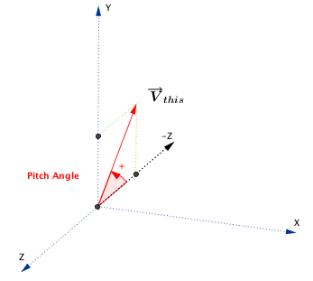
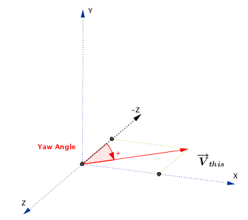
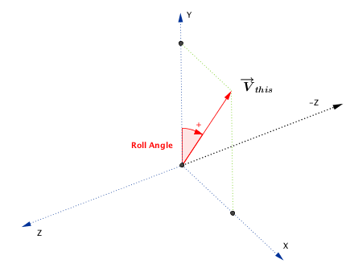
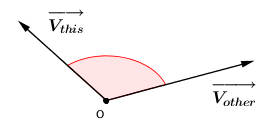
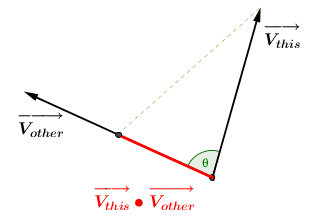
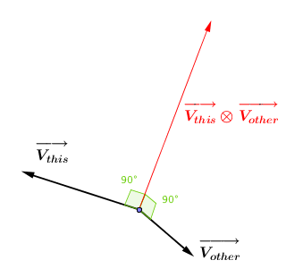

Vector¶
Attributes:
Methods:
Constants:
- class Leap.Vector¶
The Vector class represents a three-component mathematical vector or point such as a direction or position in three-dimensional space.
The Leap Motion software employs a right-handed Cartesian coordinate system. Values given are in units of real-world millimeters. The origin is centered at the center of the Leap Motion Controller. The x- and z-axes lie in the horizontal plane, with the x-axis running parallel to the long edge of the device. The y-axis is vertical, with positive values increasing upwards (in contrast to the downward orientation of most computer graphics coordinate systems). The z-axis has positive values increasing away from the computer screen.

New in version 1.0.
- classmethod Vector([x, y, z])¶
Creates a new Vector with the specified component values. If you do not supply arguments, a zero-vector is returned.
new_vector = Leap.Vector(0.5, 200.3, 67)
Parameters: - x (float) – The x component. Corresponds to the long (left to right) dimension of the Leap Motion controller.
- y (float) – The y component. Corresponds to height above the device.
- z (float) – The z component. Corresponds to the short (front-back) dimension of the Leap Motion controller.
New in version 1.0.
- classmethod Vector(vector)
Copies the specified Vector.
copied_vector = Leap.Vector(other_vector)
Parameters: vector (Vector) – The vector to copy. Return type: Vector – the new copy. New in version 1.0.
- x¶
Type: float The horizontal component.
x = this_vector.x
New in version 1.0.
- y¶
Type: float The vertical component.
y = this_vector.y
New in version 1.0.
- z¶
Type: float The depth component.
z = this_vector.z
New in version 1.0.
- normalized¶
Type: Vector A normalized copy of this vector.
A normalized vector has the same direction as the original vector, but with a length of one.
normalized_vector = other_vector.normalized
New in version 1.0.
- pitch¶
Type: float The pitch angle in radians.
Pitch is the angle between the negative z-axis and the projection of the vector onto the y-z plane. In other words, pitch represents rotation around the x-axis. If the vector points upward, the returned angle is between 0 and pi radians (180 degrees); if it points downward, the angle is between 0 and -pi radians.
pitch_radians = this_vector.pitch
New in version 1.0.
- yaw¶
Type: float The yaw angle in radians.
Yaw is the angle between the negative z-axis and the projection of the vector onto the x-z plane. In other words, yaw represents rotation around the y-axis. If the vector points to the right of the negative z-axis, then the returned angle is between 0 and pi radians (180 degrees); if it points to the left, the angle is between 0 and -pi radians.
yaw_radians = this_vector.yaw
New in version 1.0.
- roll¶
Type: float The roll angle in radians.
Roll is the angle between the y-axis and the projection of the vector onto the x-y plane. In other words, roll represents rotation around the z-axis. If the vector points to the left of the y-axis, then the returned angle is between 0 and pi radians (180 degrees); if it points to the right, the angle is between 0 and -pi radians.
Use this function to get roll angle of the plane to which this vector is a normal. For example, if this vector represents the normal to the palm, then this function returns the tilt or roll of the palm plane compared to the horizontal (x-z) plane.
roll_radians = normal_vector.roll
New in version 1.0.
- is_valid¶
Type: boolean True if all of the vector’s components are finite. If any component is NaN or infinite, then this is false.
valid_vector = this_vector.is_valid
New in version 1.0.
- magnitude()¶
The magnitude, or length, of this vector.
The magnitude is the L2 norm, or Euclidean distance between the origin and the point represented by the (x, y, z) components of this Vector object.
length = this_vector.magnitude
Return type: float – The length of this vector. New in version 1.0.
- magnitude_squared()¶
The square of the magnitude, or length, of this vector.
length_squared = this_vector.magnitude_squared
Return type: float – The square of the length of this vector. New in version 1.0.
- distance_to(other)¶
The distance between the point represented by this Vector object and a point represented by the specified Vector object.
a_point = Leap.Vector(10, 0, 0) origin = Leap.Vector.zero distance = origin.distance_to(a_point); # distance = 10
Parameters: other (Vector) – Another point. Return type: float – The distance from this point to the specified point. New in version 1.0.
- angle_to(other)¶
The angle between this vector and the specified vector in radians.
The angle is measured in the plane formed by the two vectors. The angle returned is always the smaller of the two conjugate angles. Thus A.angle_to(B) == B.angle_to(A) and is always a positive value less than or equal to pi radians (180 degrees).
If either vector has zero length, then this function returns zero.
angle_in_radians = Leap.Vector.x_axis.angle_to(Leap.Vector.y_axis) # angle_in_radians = PI/2 (90 degrees)
Parameters: other (Vector) – Another direction vector. Returns: float – The angle between this vector and the specified vector in radians. New in version 1.0.
- dot(other)¶
The dot product of this vector with another vector.
The dot product is the magnitude of the projection of this vector onto the specified vector.
dot_product = this_vector.dot(that_vector)
Parameters: other (Vector) – Another vector. Returns: float – The dot product of this vector and the specified vector. New in version 1.0.
- cross(other)¶
The cross product of this vector and the specified vector.
The cross product is a vector orthogonal to both original vectors. It has a magnitude equal to the area of a parallelogram having the two vectors as sides. The direction of the returned vector is determined by the right-hand rule. Thus A.cross(B) == -B.cross(A).
cross_product = this_vector.cross(that_vector)
Parameters: other (Vector) – Another vector. Returns: Vector – The cross product of this vector and the specified vector. New in version 1.0.
- to_float_array()¶
Converts this vector to a float array.
array = this_vector.to_float_array()
Return type: float[] – the vector as a three-element array of floating point values. New in version 1.0.
- to_tuple()¶
Converts this vector to a tuple containing the x, y, and z components.
tuple = this_vector.to_tuple()
Return type: tuple – The three vector components as a tuple. New in version 1.0.
- neg(a, b)¶
A copy of this vector pointing in the opposite direction.
negation = -this_vector
New in version 1.0.
- add(a, b)¶
Add vectors component-wise.
summed_vectors = this_vector + that_vector
New in version 1.0.
- sub(a, b)¶
Subtract vectors component-wise.
difference = this_vector - that_vector
New in version 1.0.
- mul(a, b)¶
Multiply vector by a scalar.
product = this_vector * 5.0
New in version 1.0.
- div(a, b)¶
Divide vector by a scalar.
quotient = this_vector/2.5
New in version 1.0.
- iadd(a, b)¶
Add vectors component-wise and assign the sum.
thisVector += thatVector
New in version 1.0.
- isub(a, b)¶
Subtract vectors component-wise and assign the difference.
thisVector -= thatVector
New in version 1.0.
- imul(a, b)¶
Multiply vector by a scalar and assign the product.
thisVector *= thatVector
New in version 1.0.
- idiv(a, b)¶
Divide vector by a scalar and assign the quotient.
thisVector /= thatVector
New in version 1.0.
- eq(a, b)¶
Compare Vector equality component-wise.
vectors_are_equal = (this_vector == that_vector)
New in version 1.0.
- ne(a, b)¶
Compare Vector inequality component-wise.
vectors_not_equal = (this_vector != that_vector)
New in version 1.0.
- getitem(object, index)¶
Index vector components numerically. Index 0 is x, index 1 is y, and index 2 is z.
x = this_vector[0] y = this_vector[1] z = this_vector[2]
Return type: float – The x, y, or z component of this Vector, if the specified index value is at least 0 and at most 2; otherwise, returns zero. New in version 1.0.
- x_axis¶
Type: Vector The x-axis unit vector: (1, 0, 0)
x_axis_vector = Leap.Vector.x_axis
New in version 1.0.
- y_axis¶
Type: Vector The y-axis unit vector: (0, 1, 0)
y_axis_vector = Leap.Vector.y_axis
New in version 1.0.
- z_axis¶
Type: Vector The z-axis unit vector: (0, 0, 1)
z_axis_vector = Leap.Vector.z_axis
New in version 1.0.
- left¶
Type: Vector The unit vector pointing left along the negative x-axis: (-1, 0, 0)
left_vector = Leap.Vector.left
New in version 1.0.
- right¶
Type: Vector The unit vector pointing right along the positive x-axis: (1, 0, 0)
right_vector = Leap.Vector.right
New in version 1.0.
- down¶
Type: Vector The unit vector pointing down along the negative y-axis: (0, -1, 0)
down_vector = Leap.Vector.down
New in version 1.0.
- up¶
Type: Vector The unit vector pointing up along the positive y-axis: (0, 1, 0)
up_vector = Leap.Vector.up
New in version 1.0.